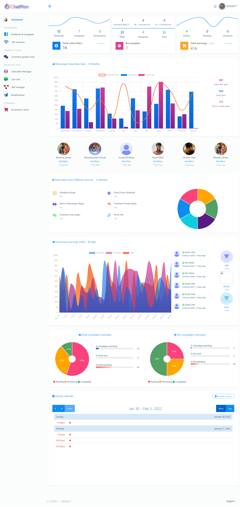

Smooth and steady Dashboard
ChatPion has a properly structured and precise dashboard that lets the user use the application’s different features efficiently. In one word, ChatPion’s Dashboard is designed in a way that users can run the application appropriately. Also, the Dashboard gives information with Graphical Analytics.
